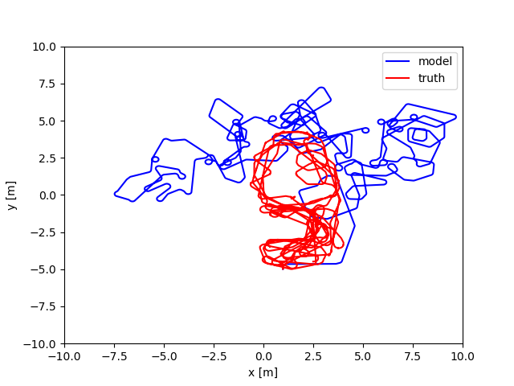
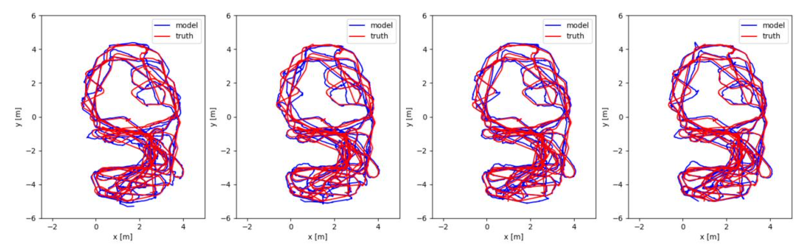
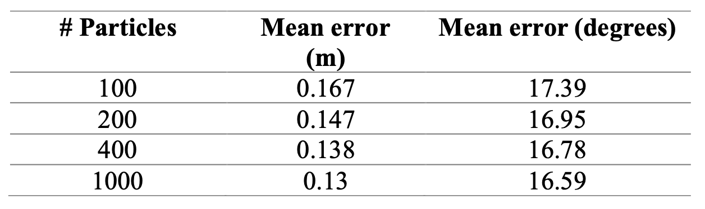

October, 2023
Monte Carlo Localization
Particle filter for localization in Python.
Overview

Python implementation of a Particle Filter for robot localization. This work was done for Machine Learning and Artificial Intelligence for Robotics, an elective course I took in my MSR journey. The implementation is based on the particle filter as explained in Probabilistic Robotics, by Thrun, Sebastian; Wolfram, Burgard; Fox, Dieter. MIT Press Books, 2006.

Why particle filters?
Robot localization is a complex problem. Any physical interaction between a robot and its environment provides uncertainty. Wheels slip, actuators dont have instantaneous responses, friction is variable, etc.
Motion models provide an estimation of the robot movement based on its actuators position/speed. The interaction robot-environment is extremely hard to model, but making an ideal motion model (dead reckoning) is fairly simple (in this case we are talking about a differential drive robot). Sensors can help fine tune the estimation of the robot’s localization. So we need a way to combine that information to retrieve a position estimate. This is where the Particle Filter helps, combining a motion model, a measurement model and probabilistic techniques to get state estimation. A good example of why dead reckoning is not a useful long-term is shown in the image Image 1.
Particle Filters
The particle filter is a nonparametric variant of the Bayesian filter. The posterior’s distribution is represented by a set of particles representing possible states, instead of mathematically representing the posterior’s distribution. On each iteration, the filter samples a finite number of particles from the motion model, and then weighs each one based on sensor measurements. In the resampling step, the best particles -according to measurements- are retained. Although sampling particles from the motion model might seem to make the state diverge due to the probabilistic nature of it, the resampling step selects the “best candidates”, and is what makes the filter converge.
Implementation
The motion and measurement models are fundamental for the particle filter’s implementation. But there are other important aspects as well, such as the weighting function, and the resampling step. While implementing the filter one might come across several edge cases where considerations must be taken. As an example, how should the filter behave if there are no measurements? And if there are multiple? If the filter tracks states of N particles, how does one get a single prediction? Each one of these points is briefly treated next.
Results

Tests were performed for multiple values of N (100, 200, 400, 1000) and the plots for the filter’s output means and the ground truth are shown in Image 2. The heading of the robot is not plotted here for ease of understanding. The filter was seeded with the initial location of the robot.

The achieved mean error is shown in Table 1. Logically, for a larger number of particles the error decreases. Tests were also performed where the filter was not seeded with the initial location, but with a zero-mean distribution.
Unlike the seeded filter, which closely matches the ground truth since the beginning, the unseeded one progressively
gets closer to the ground truth each timestep, until the state reaches the same as if it was seeded.
Attribution
The dataset used is a modified version of the work made available by Keith Leung, Yoni Halpern, Tim Barfoot, and Hugh Liu [*]. It was provided by Prof. Brenna Argall in the Fall 2023 edition of the course Machine Learning and Artificial Intelligence for Robotics.
[*] Leung K Y K, Halpern Y, Barfoot T D, and Liu H H T. “The UTIAS Multi-Robot Cooperative Localization and Mapping Dataset”. International Journal of Robotics Research, 30(8):969–974, July 2011.